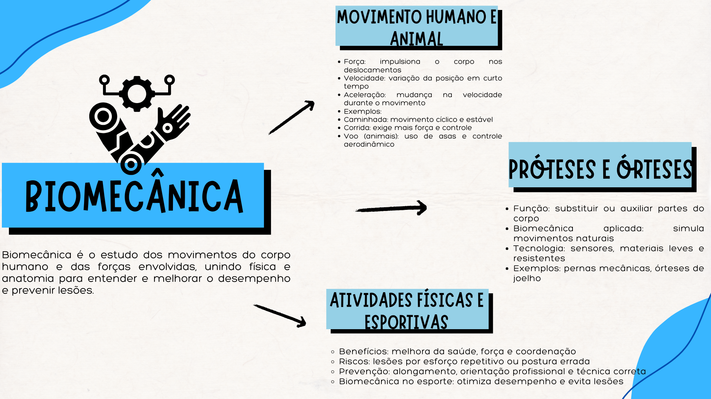

Pesquisa e Conteúdo
A biomecânica aplica princípios da física para estudar o movimento, sendo crucial no desenvolvimento de próteses e órteses. Ao entender forças e torques naturais, os engenheiros criam dispositivos que imitam movimentos, considerando resistência de materiais, minimização de atrito e articulações fluidas. Próteses mioelétricas usam a física para converter sinais musculares em movimentos precisos, melhorando a vida dos usuários.
O exercício fortalece os músculos, aumentando a capacidade de gerar força e, consequentemente, melhorando a performance em diversas tarefas. A compreensão da biomecânica dos movimentos esportivos é crucial para otimizar o desempenho e, principalmente, para a prevenção de lesões. Analisar as forças de impacto, os ângulos articulares e a distribuição de carga durante um exercício permite identificar padrões de movimento inadequados que podem levar a entorses, distensões e outras lesões. A física nos ajuda a entender como a aplicação correta da força, a manutenção de uma postura adequada e o uso de equipamentos de proteção podem minimizar os riscos associados à atividade física, maximizando seus benefícios para a saúde e o bem-estar.
A física é essencial para entender o movimento em diversas áreas, desde a marcha até o desenvolvimento de próteses e a segurança em atividades físicas. Os princípios de força, velocidade, aceleração e biomecânica nos dão informações importantes que se aplicam tanto em pesquisas quanto no nosso cotidiano, influenciando como nos movemos e buscamos bem-estar.
Essa compreensão não se restringe aos laboratórios e centros de pesquisa; ela permeia nosso dia a dia, influenciando a forma como nos movemos, como interagimos com o mundo e como buscamos uma vida mais saudável e plena. Ao reconhecermos a importância da física nesses temas, abrimos caminho para inovações que melhoram a qualidade de vida e para uma maior consciência sobre o potencial e os limites do nosso próprio corpo.
Mapa Mental
Confira o mapa mental abaixo:
Áudio Explicativo
Ouça a explicação gravada com base na pesquisa: